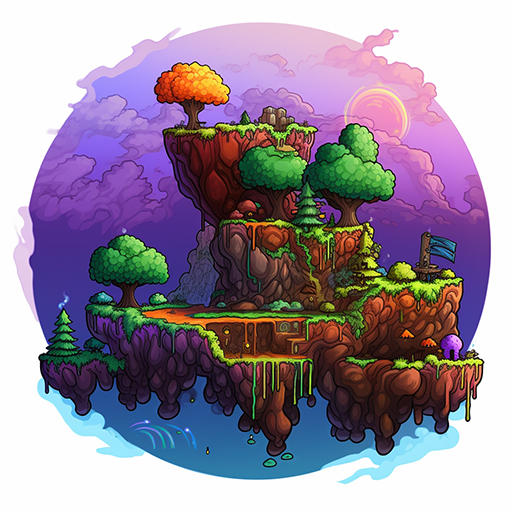

El videojuego "Terraria" fue desarrollado y publicado por Re-Logic, una empresa independiente de videojuegos fundada por Andrew Spinks. El juego fue lanzado inicialmente para Microsoft Windows en 2011 y ha sido posteriormente portado a diversas plataformas, como macOS, Linux, PlayStation, Xbox, Nintendo Switch, iOS y Android.
Este juego me parece interesante y entretenido debido a su complejidad y disitintos mecanismos dentro del mismo para mi esto refleja un buen trabajo de parte del equipo de desarrollo
La calificacion que le doy a este juego es de 4.5 de 5 de debido a los retos que representan los distintos jefes en las distintas dificultades del mismo